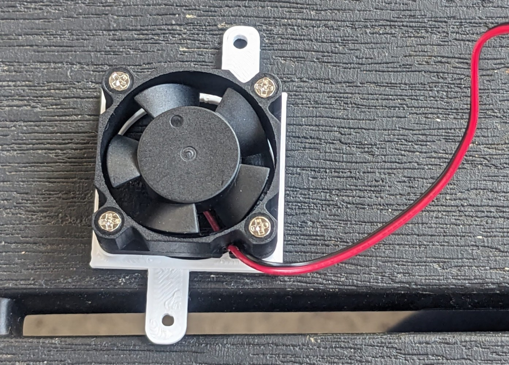
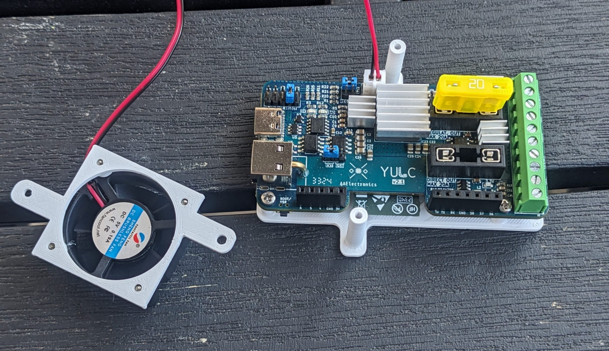
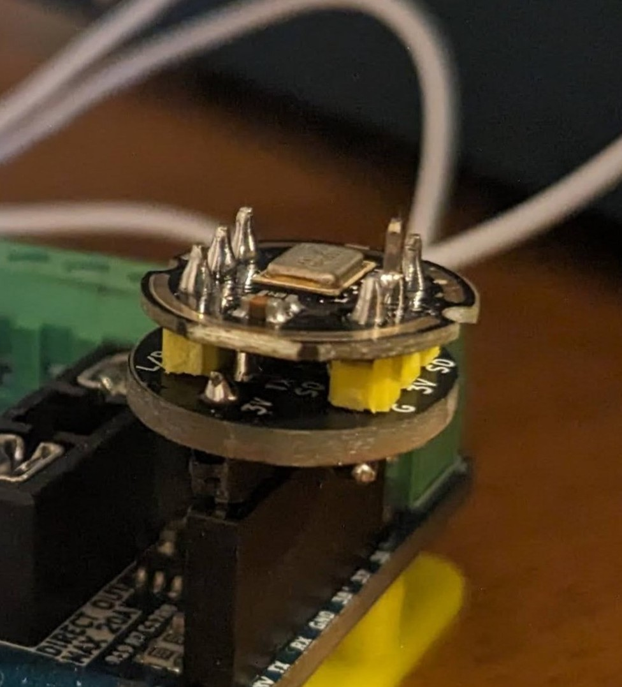
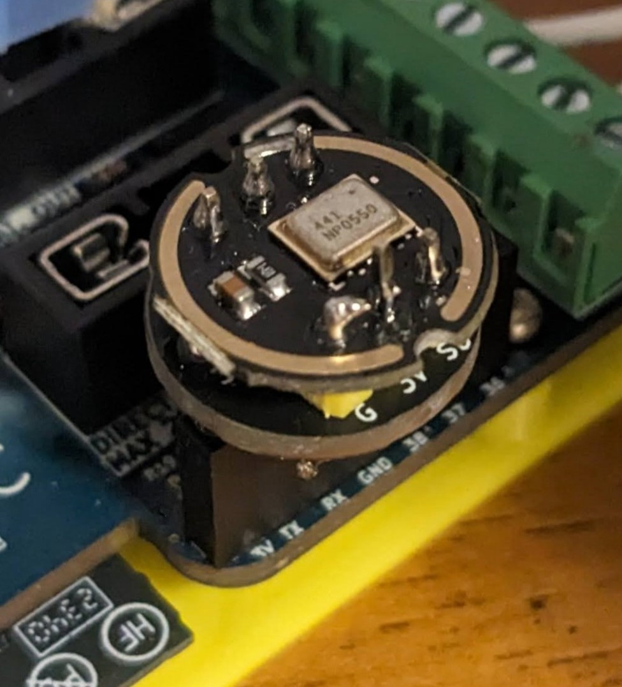
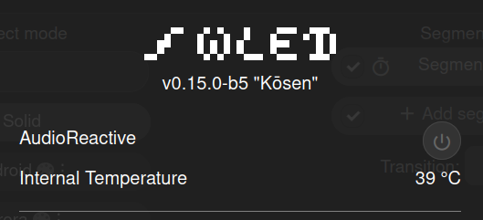
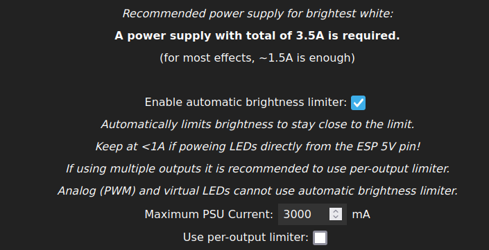

YULC
Yes, a USB-C Led Controller

Current hw rev: 2.1
Pre-order here!

YULC is your future-proof perfect mate for powering your lightings at 5, 12 or 24V. Thanks to its compact form factor, it can be placed almost everywhere, it features a lot of protections to ensure safety for both the charger and the strips, and in the meanwhile, can provide a lot of juice to feed very power-hungry lights setup.
It also boasts an handy built-in buck regulator that from a maximum of 24V ensures safe 5V or 12V to your output. This mean that is also possible to use 18,19,…,24V external power supply (USB-C or barrel jack) taking advantage of their higher total power output and converting them to 5V or 12V increasing the output current.
Furthermore, on the back of the board there is a powerful ESP32-S3, directly programmable through the USB-C, that allows you to manage even more complex effects and to run heavy tasks.
So, in few words, YULC consists in a full-featured board that can replace a lot of wiring messes, optimizing space and debug time in a reliable way.
How does it work
Here you can have a look to how the power path works:

There are two power stages. The main one for the led stips and one dedicated to the ESP32
Powering all the logic and the ESP32-S3 with a dedicated secondary power stage without relying on the main one ensures that in case of a blowing fuse, everything will still work as expected. So replacing the fuse on-the-fly will be the only thing you’ll need to be again ready to go.
YULC settings explanation
This is an interactive view of all the YULC possible settings:
This is a full-detailed version.

- This is the main jumper that you have to select before anything else and before powering the board. If you join the
EXTpins, YULC will be powered through the barrel jack power supply, not through the USB-C. So you can use a power supply up to 24V and then decide if you want to buck it to 5V or 12V or use it directly to the output bypassing the buck converter. With this selection, you are also able to safely program YULC through the USB-C while powering everything from the external power supply thanks to a back-to-back mosfet configuration. To do that you have to select 5V from the PD selection voltage (2). There will also be those 5V on the board but they won’t power anything (To prove that just disconnect the barrel jack power supply and the board will be turned off).
Instead, if you select USB pins, everything will be powered from the USB-C according to the voltage selected. As before, you can choose to buck the voltage to 12 or 5V or use it directly.
When selecting USB, do not connect the barrel jack!
- USB-C PD Voltage selection. Note that these voltages are the one you are asking for to the charger, not the ones you’ll surely have on the board. Selecting 20V, if the charger can provide them, the negotiation will end successfully, mosfets will let current flow and everything will be powered on. But if the charger is not able to do that, the negotiation will fail and the board will stay off. To help you debug that, the leds “OK” or “BAD” will lights up according to the negotiation result. Pay attention to the chargers you want to use. It should have a label with the list of voltages it can provide, so be sure to ask for that supported voltages, otherwise the negotiation will fail. Also consider the amount of power you need for your led strips and the power the charger can give. Chargers with the USB-A output will not work, even selecting 5V on YULC. Only Type-C Power Delivery chargers are compatible
E.g. If you have 5V strips like WS2812b and you want 6A at the output (so 30W), be sure to ask the for a voltage/current combo the charger can offer that can give those 30W and than buck it to 5V through the converter to have the current you want at the output.
Be sure to select the closest combination of power and input voltage to what you need. If you need the buck IC to regulate at 5V, an input voltage of 9V or 12V will be better than a 24V from the heating point of view. The voltage difference (Vin - Vout) is smaller, so the inductor is “less stressed” -> less ripple current -> less heat. So you need the best trade-off with a quite close input voltage and enough power for your application.
- This is the buck converter output regulation. Populate horizontally the pairs of pins according to the voltage you want to have at the output. If your input is lower or same as the output, just do not use the buck converter and route it directly but keep it populated even if you don’t use it. The buck IC will automatically enter in an energy save mode when the load is really small or even is not present. The same voltage will be shared across the two channels You can source up to 20A from the IC.
With high watts at the output the board’s temperature will increase, so please always use the given heatsinks (both for the IC and the inductor) and the 5V fan to be on the safe side.
- These two fuse holders are not one for channel as it could seem. The two channels share the same fuse. But there are two fuses because you have to select only one at a time according to what output you need. If you need the buck converter you have to populate the
REGULAT. OUTfuse. Otherwise, if you want the input voltage routed directly to the output, populate theDIRECT OUTone. These holders are compatible with both the standard automotive blade fuses and the mini blase fuses, but for higher currents the standard blade fuse is suggested thanks to a better contact with the holder’s metal
Never populate both of them at the same time, it will short the regulator IC.
YULC’s has 10 output terminals, 5 for each channel: 2x Positive terminal, 2x GND terminal, 1x Data terminal.
Each terminal can handle up to 15A, so it’s heavily suggested to use both the pairs of the positive terminal and negative terminal, to decrease the overall resistance and to inject power easier later in the strips. Each channel is equipped with a level shifer to its data output and a high side power N-mosfet, in order to save a lot of power for longer strips in the idle state. These mosfets can also be used to control simpler strips through PWM, so you can easily control different combinations of type of strips using both the channels. Plase attach the given heatinsks to them to keep them cool when switching high currentsYULC exposes also some pins through breadboard-friendly headers. You can use these to connect buttons/microhpones/potentiometers but you can also increase the number of output channels but consider that they don’t have level shifters and that you should take the power from the dedicated output terminals
| Pin | Function |
|---|---|
| GPIO 6 | IO |
| GPIO 5 | IO |
| GPIO 4 | IO |
| GPIO 38 | IO |
| GPIO 37 | IO |
| GPIO 36 | IO |
| 3V | Power |
| GND | Ground |
| GPIO 44 | TX |
| GPIO 43 | RX |
| Pin | Function |
|---|---|
| GPIO 0 (DO) | Boot/User Button |
| GPIO 1 (DO) | Led Data 1 |
| GPIO 2 (DO) | Led Data 2 |
| GPIO 47 (DO) | Mosfet 1 |
| GPIO 21 (DO) | Mosfet 2 |
| GPIO 7 (AI) | Fuse sense |
YULC first configuration
According to your type of setup, you’ll want to set YULC and strips to be powered in the the best way possibile. Follow this steps to determine all the jumpers selection you need according to how they work:

Be sure to power YULC only after you’ve set everything up, do not change PD and buck output voltages on the fly, neither the first jumper
Only after you are done with jumpers and fuse selections you can mount the 3D printed enclosure, because once it’s mounted, you’ll have limited access to them.
First installation
This board does not have a “full closed” enclosure, because it needs a lot of air flow while stressing it with a lot of output current. So actually the “enclosure” will consists in two pieces: a simple flat base to screw to YULC with 3 M2 screws and the fan holder.
Step 1
First attach the inductor heatsink (the biggest one) as far to the right as possible, almost touching the fuse holder. Doing this way there is enough space for the regulator heatsink.
Pay attention to place the heatsink in a way that it does not touch any other components, in particular the regulator IC one
In the end you can place the two heatsinks for the mosfet and then mount YULC on the base locking it in place with the help of the three smallest M2 screws

Step 2
Use other 4 M2 screws to mount the facing down fan on top of the holder and then connect it to YULC thorugh the dedicated JST connector.


Step 3
Now, with the help of the two longer screws, connect the fan holder to the two pillars of the base

Your YULC is completely assembled, you can proceed with the software configuration
Bonus
DIN BRACKET
The base has two more holes for M2 screws that can be used to design other types of support, like a din-mounting bracket, taken from thingiverse and modified a bit.

If you want to install something like this, you have to do that before STEP 1
INMP441 Mic Adapter
If you would like to use the INMP441 microphone breakout board in combination with the Sound Reactive usermod, you can find here the gerber file of the tailor-made adapter.


It uses the following pins:
| YULC Pin | INMP441 Pin |
|---|---|
| 3V | 3V |
| GPIO 43 (TX) | SD |
| GPIO 44 (RX) | WS |
| GND | GND, L/R |
| GPIO 38 | SCK |
Software configuration
WLED
Wled for YULC is a manually compiled build, based on the v0.15.0-b5 “Kosen”. It features 4 usermods: Audio Reactive, Internal Temperature v2, MultiRelay and one I created for myself to use the connected strip as a timer bar.

AUDIO REACTIVE
Thanks to the powerful ESP32-S3, you can really take adavantage of this integration while driving complex effects on really long strip. Yuo have multiple pins on the exposed header that you can use to read an I2S microphone. See INMP441 pcb adapter.
INTERNAL TEMPERATURE v2
With this great usermod, we can directly monitor the temperature of the microcontroller thanks to the built-in temperature sensor. YULC has the ESP32-S3 placed on the bottom side and quite close to the buck converter zone, the main heat generator. Starting with a light load, the usermod temperature and the one measured on the inductor are quite similar, but the uC it’s slower to cool down. This allows to know the S3 temperature and to safely overestimate by 4/5°C the inductor temperature.
Knowing this, I slightly modified the usermod with small but significant changes.
- Temperature measurement it’s enabled by default.
- Hardcoded chip 70°C limit for overtemperature protection
- When the S3 will reach 70°C, the strip brightness will automatically drop to 0%, turning off the light.
- YULC will restore the default behaviour when temperature will decrease below 60°C.
You don’t need to configure anything on this usermod, it will start to work out of the box. This allows to safely use YULC even if the fan stops working for some reasons.
You can monitor the internal temperature inside the “Info” page:

Altough YULC can work giving max 20A from the buck converter, the board is shipped with a 15A fuse and a max 12/13A current limiting from WLED settings is heavily suggested to be on the safe side and to keep relative cool temperatures. As long as the fan it’s working the internal temperature won’t rise above 60/65 °C (ambient temperature + increasing) at max load but if you would really need to use full 20A at a particular voltage, you must consider to change your type of strips to one that can work with higer voltages, decreasing the needed current, injection points keeping everything safer.
Always remember to set the current limiting option according to your setup, leaving the on-board fuse as a short-circuit only protection. So, go to Config -> Led Preferences and set everything you need:

MULTI RELAY
Natively WLED only support one pin (usually connected to a relay) to physically turn on and off the light strips. While you can always use one of the exposed pins to wire an external relay, the built-in hardware already allows you to drive the two channels independently and each with its own power mosfet to toggle the strips. And thanks to this usermod, you can fully take advantage of it. This is valid if you want to connect two addressable strips, but, for example, if you want to connect one digital strip and an anlog one, WLED already manage this without any external software. You would only need to set one mosfet as the main relay, and the other one as a PWM driving signal. YULC offers a great versatility from this point of view.
So, to configure two digital strip go to Config -> LED Preferences and set everything up like the following picture with your own strips type and lengths. Also check “Make a segment for each output”

Now go back to Config -> Usermods and, again, follow the picture, then save. This usermod has 4 pre-defined relays, but you only need the first two. Pin 47 is linked to Channel 1 (DATA 1 on the PCB) and pin 21 to Channel 2. Check also “External” on both, so we can control these relays through the dedicated APIs.

At this point we can physically toggle both segments through built-in mosfets combining both WLED and Multi Relay JSON API. Keep in mind that the WLED main button will still turn off all the segments at once. The calls you need are:
//Switching on the mosfet #0 to power the first segment/strip
curl -X POST -H "Content-Type: application/json" -d ''{"MultiRelay":{"relay":0,"on":true}}'' "http://your-ip-address/json"
//Turning on "software" the segment with ID #0
curl -X POST -H "Content-Type: application/json" -d ''{"seg":[{"id":0,"on":true}]}'' "http://your-ip-address/json/state" When switching on you’ll want to physically turn on the strip before turning on via software. Instead, when switching off, it would be better to reverse the sequence. Basically there should not be data signals to led strips while they are physically disconnected from the power supply.
If you are an Home Assistant user, you can easily integrate these controls as light entities using some shell commands:
shell_command:
strip_1_on: 'curl -X POST -H "Content-Type: application/json" -d ''{"seg":[{"id":0,"on":true}]}'' "http://your-ip-address/json/state"'
strip_1_mos_on: 'curl -X POST -H "Content-Type: application/json" -d ''{"MultiRelay":{"relay":0,"on":true}}'' "http://your-ip-address/json"'
strip_1_off: 'curl -X POST -H "Content-Type: application/json" -d ''{"seg":[{"id":0,"on":false}]}'' "http://your-ip-address/json/state"'
strip_1_mos_off: 'curl -X POST -H "Content-Type: application/json" -d ''{"MultiRelay":{"relay":0,"on":false}}'' "http://your-ip-address/json"'
strip_2_on: 'curl -X POST -H "Content-Type: application/json" -d ''{"seg":[{"id":1,"on":true}]}'' "http://your-ip-address/json/state"'
strip_2_mos_on: 'curl -X POST -H "Content-Type: application/json" -d ''{"MultiRelay":{"relay":1,"on":true}}'' "http://your-ip-address/json"'
strip_2_off: 'curl -X POST -H "Content-Type: application/json" -d ''{"seg":[{"id":1,"on":false}]}'' "http://your-ip-address/json/state"'
strip_2_mos_off: 'curl -X POST -H "Content-Type: application/json" -d ''{"MultiRelay":{"relay":1,"on":false}}'' "http://your-ip-address/json"'
light:
- platform: template
lights:
strip_1:
turn_on:
- service: shell_command.strip_1_mos_on
- service: shell_command.strip_1_on
turn_off:
- service: shell_command.strip_1_off
- service: shell_command.strip_1_mos_off
strip_2:
turn_on:
- service: shell_command.strip_2_mos_on
- service: shell_command.strip_2_on
turn_off:
- service: shell_command.strip_2_off
- service: shell_command.strip_2_mos_offNow you have two completely separated strips from every point of view.

STRIP AS A TIMER
I made this simple usermod to use the connected strip as a visual timer that you can control through some MQTT commands. I really like how it turned out and I think it could be a funny and eye-catching countdown.
First of all, you need to enable MQTT checking Config -> Sync Interfaces -> Enable MQTT in WLED settings. Then fill the required parameters to connect to your MQTT broker.

Basically, When the timer starts, the strip is filled with green color. Leds are turned off according to the remaining time of the timer and the color starts changing being red when the timer has ended. MQTT messages to use the timer are:
- (device topic)/timerbar with payload “+X” where X is the duration of the timer in seconds. If there’s no active timer, with this command the timer starts with a duration of X. If there is already a running timer, the same command adds X seconds to timer. In this case the strip is not filled again, but leds will start to turn off slower and the already turned off leds will remain off.
From the image, the command will be wled/bedroom/timerbar with payload +X
- (device topic)/timerbar with payload “STOP” -> This message ends the timer.
The command will be wled/bedroom/timerbar with payload STOP
Everytime the timer ends, the strip returns in the previous state (effect, palette…)
Download resources
- Schematic
- Kicad Project
- 3D Enclosure
- INMP441 adapter
License